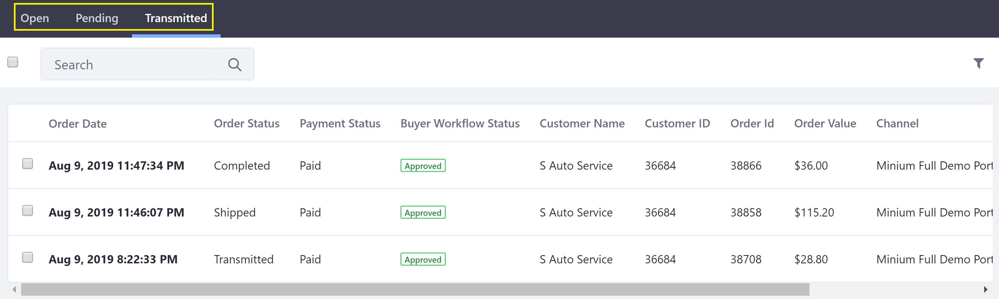
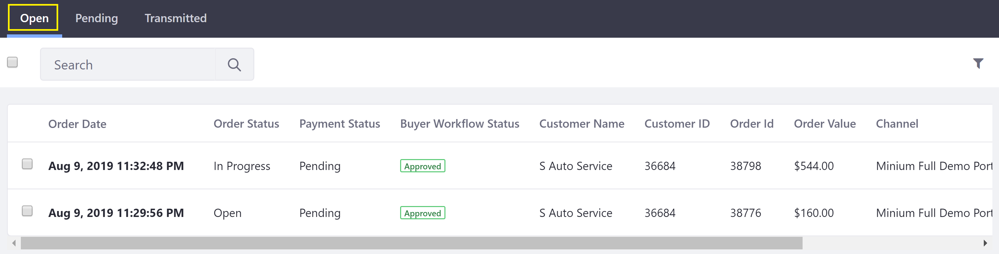
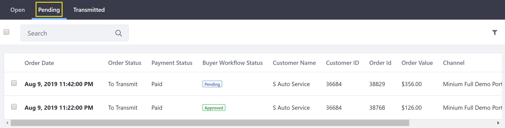
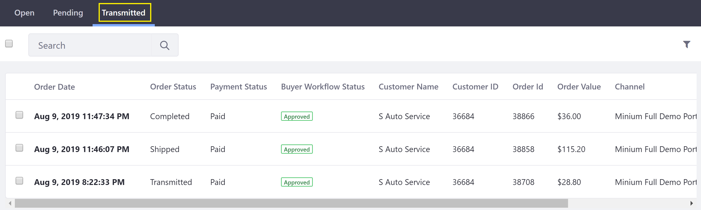

Orders Menu¶
All orders in Liferay Commerce can be viewed and managed by an administrator in the Orders menu. Here, orders are displayed in the Open, Pending, and Transmitted tabs according to the order’s progress through the order life cycle.

This article gives an overview of the Open, Pending, and Transmitted tabs.
Open¶
In this tab, the order activity is exclusively on the buyer’s side. A new order is created in the Open tab when a buyer adds products to their cart. The order remains in this tab until the buyer places the order.
Note: If Approval Workflow is enabled, orders remain in the Open tab until the workflow process has completed and the order is placed.

Pending¶
The Pending tab serves as a holding place for orders – this is helpful for business contexts where not all placed orders are immediately transmitted. When a buyer places an order, the order moves to the Pending tab. Here, the seller can modify, cancel or transmit the order.
Note: If Transmission Workflow is enabled, orders remain in the Pending tab throughout the workflow process, even if the seller rejects an order, sending it back to the buyer.

Transmitted¶
In this tab, the order activity is exclusively on the seller’s side. The seller transmits a Pending order by changing the order status (manually or via automation) from the “To Transmit” status to any other order status. At this point, the order moves to the Transmitted tab and, if configured, is sent to an external system, such as Microsoft’s Dynamics GP, Oracle’s NetSuite, or SAP. The seller may then proceed with delivery of the ordered products to the buyer. Additional information may also be added to the order, such as an updated order status, shipping information and estimated arrival time.

Additional Information¶
Order information in the Orders menu can also be presented to other users – particularly buyers – using the Open Carts widget (for orders on the Open tab) and the Orders widget (for orders on the Pending or Transmitted tabs). See Pending Orders and Placed Orders for details.
- Order Life Cycle
- Order Information
- Order Workflows
- Order Management Statuses
- Advancing an Order to Transmitted
- Enabling Order Workflows
- Approving/Rejecting Orders in Order Workflows